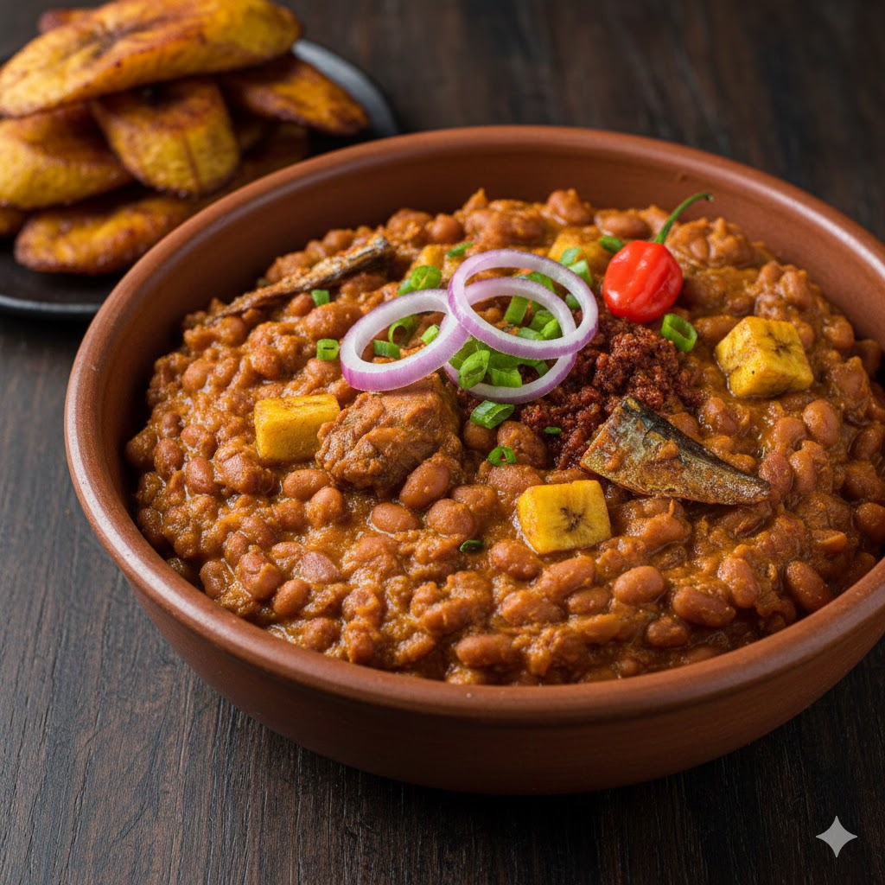

Home
Nigerian Porage Beans Recipes

Description
Nigerian Bean Porridge is a savory, protein-rich stew made primarily from
Honey beans (Oloyin) or Brown beans. Unlike a soup, the texture is thick
and "mushy," with the beans partially breaking down to create a natural
gravy. It is defined by its deep orange color from unrefined palm oil and
a distinct savory-sweetness, often enhanced by ground crayfish and smoked
fish. It is traditionally served with fried plantain (dodo), bread, or
soaked garri.
Ingredients
- 2 cups Honey beans or Brown beans
-
1 large Onion (diced), 2-3 Scotch Bonnet peppers (Atarodo), 1 Red Bell
Pepper (Tatashe)
-
1/2 cup Red Palm Oil, 2 tbsp Ground Crayfish, 1-2 Seasoning cubes, Salt
to taste
- Smoked fish (Deboned), Dry prawns, or precooked Ponmo (Cow skin)
-
1-2 Ripe Plantains (diced and added into the pot, or fried separately)
steps
-
Clean and Pre-boil: Pick through the beans to remove
stones. Wash and place them in a pot with enough water to cover them.
Boil for 10 to 15 minutes, then drain and rinse (this helps reduce
bloating/gas).
-
The Softening Phase: Return the beans to the pot with
fresh water and half of the diced onions. Cook on medium heat until the
beans are very tender. Note: Do not add salt yet, as salt can prevent
beans from softening quickly.
-
Prepare the Sauce: While the beans cook, blend the
peppers and the remaining onions into a coarse consistency.
-
Combine: Once the beans are soft, ensure the water
level is just slightly above the beans. Add the blended pepper mix, palm
oil, crayfish, seasoning cubes, and smoked fish/prawns.
-
Simmer and Mash: Stir well and let it simmer on
low-medium heat for about 10 to 15 minutes. Use a wooden spoon to
slightly mash some of the beans against the side of the pot to thicken
the porridge.
-
Final Seasoning: Add salt to taste. If you like your
plantains cooked inside the beans, add the diced ripe plantains now and
cook for another 5 minutes until they are soft.
-
Rest: Turn off the heat and let the porridge sit for 5
minutes before serving; it thickens even more as it cools.